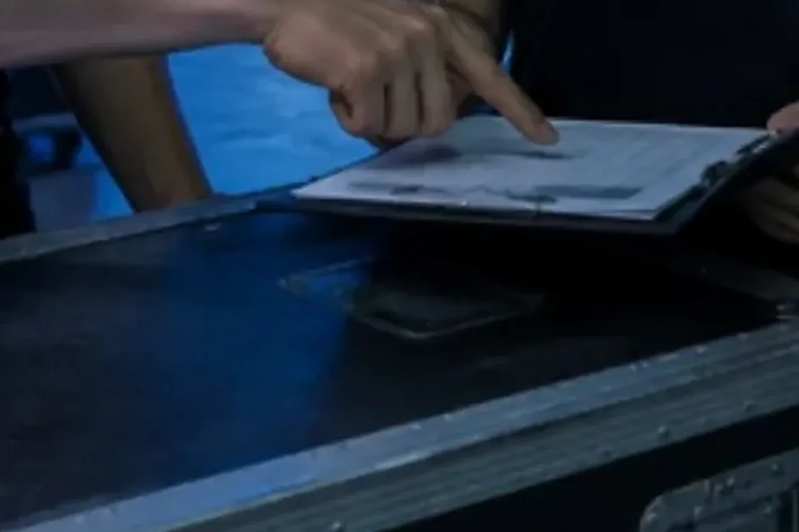

LOTUS VISUAL JOURNAL / ためになる仕事術 #01
「もう失敗した」と決めてから、準備を始める。
プレモーテムという段取り術
もし、本番の翌日の自分から電話がかかってきて「昨日は、大失敗だった」と言われたら。あなたは真っ先に、何が起きたと考えますか。
年末に向けて、イベントや発表会の準備が重なる季節です。今日は、失敗を「先に」済ませてしまう準備のやり方の話をします。
01 / KLEIN検死を、始まる前に
医療の世界には「ポストモーテム(死後の検死)」という言葉があります。亡くなった理由を調べ、次に生かすための検証です。ビジネスでもプロジェクトが終わったあとに振り返りをしますが、困ったことに、検死で分かった教訓は、その患者を助けてはくれません。
そこで、アメリカの認知心理学者ゲイリー・クラインは逆を考えました。2007 年、ハーバード・ビジネス・レビューに書いた短い記事の題は「プロジェクトのプレモーテム(事前検死)を行う」。計画が固まった段階で、チームにこう告げます。「いま、未来から戻ってきた。このプロジェクトは、見事に失敗した」。
やり方はシンプルです。全員が計画の説明を聞いたあと、リーダーが「失敗した」と宣言する。各自が数分間、失敗の理由を思いつく限り、黙って紙に書く。ふだんなら口にしにくい心配ほど書く。それから順番に 1 つずつ読み上げ、全部を書き出す。最後に、その一覧を使って計画を手直しする。会議 1 回、道具は紙とペンだけです。
02 / HINDSIGHT「起きた」と思うと、理由が増える
「失敗するかもしれない理由は?」と聞かれるのと、「失敗した。理由は?」と聞かれるのとでは、頭の働き方が違います。前者は予想で、後者は説明です。人は、まだ起きていない出来事を予想するのは苦手なのに、起きてしまったことの理由を語るのは、驚くほど得意です。
クラインがこの方法の裏付けに挙げたのが、1989 年にデボラ・ミッチェル、J・エドワード・ルッソ、ナンシー・ペニントンが発表した研究でした。出来事を「起きるかもしれない」と考えてもらうより、「もう起きた」と確実なものとして想像してもらったほうが、その結果を説明する理由がおよそ 3 割多く出てきた。研究者たちはこれを「プロスペクティブ・ハインドサイト(先取りした後知恵)」と呼びました。
もうひとつの効き目は、人の気持ちのほうにあります。計画がまとまりかけた会議で「でも、これ危なくないですか」と言うのは勇気がいります。ところがプレモーテムでは、失敗の理由を出すこと自体が課題になる。心配を口にする人が、水を差す人ではなく、いちばん仕事をしている人になります。行動経済学者のダニエル・カーネマンも著書『ファスト&スロー』の中で、この方法を、集団が楽観に流されるのを防ぐ手として紹介しています。
「起きるかも」を「起きた」に言い換えるだけで、頭は予想モードから説明モードに切り替わる。そして、心配を言うことが「役割」になる。
03 / THE 30%3 割の正体
ここで、少し意地の悪い話をします。クラインの記事では、この研究は「将来の結果の理由を正しく言い当てる力が 30% 上がる」と紹介されました。ビジネス書やネットの記事でも、この「30% 正確になる」という言い回しがよく引用されています。
ところが、元の研究が数えていたのは、出てきた理由の「数」でした。理由が正しかったかどうか、質が高かったかどうかは測っていません。行動科学の書き手のなかには、この点をはっきり指摘し、プレモーテムそのものを調べた研究はまだ多くない、と書いている人もいます。3 割増えたのは「当たり」ではなく「候補」なのです。
では、プレモーテムは見かけ倒しなのか。そうではありません。むしろ、この数字の正体が、使い方を教えてくれます。プレモーテムは占いではなく、網です。網目を細かくして、ふだんなら素通りする心配まですくい上げる。すくい上げたものの中から、本当に危ないものを選んで手を打つのは、そのあとの人間の仕事です。理由を 30 個出して満足した会議は、検死をしただけで治療をしていない。
LOTUS VISUAL の現場では
映像の現場は、本番が一度きりです。撮り直しも、やり直しもききません。だからこそ、プレモーテムは本番前の打ち合わせと相性がいい。たとえば「本番中に、画面が真っ暗になった。なぜ?」と全員で書き出してみる。電源の容量が足りなかった。会場のパソコンが想定と違う解像度で出してきた。予備のケーブルが搬入口のトラックに残っていた。雨で搬入が遅れた。一つひとつは地味でも、紙の上に並ぶと、手を打てるものばかりです。
大事なのは、最後に「誰が、いつまでに」をつけることです。電源は事前に会場へ確認する。パソコンの出力は前日に実機で見る。予備は舞台袖に置く。本番の 2 割を決めきるのは、こうした準備の 8 割です。準備の段取りの話は なぜ熟練者ほど、読み上げるのか と ひもを引く勇気 にも書きました。
今日の持ち帰り
- 「失敗した。なぜ?」と聞く。「失敗するかも」より、理由がたくさん出てくる。
- 心配を、役割にする。黙って書き、順番に読む。言いにくいことほど、出てくる。
- 候補を、手当てに変える。出た理由に「誰が・いつまでに」をつけて、はじめて準備になる。